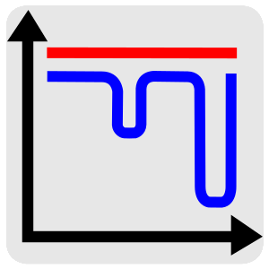

README¶
The Free Energy and Advanced Sampling Simulation Toolkit (FEASST) is a free, open-source, modular program to conduct molecular and particle-based simulations with flat-histogram Monte Carlo and molecular dynamics methods.
Features¶
Features with the (dev) label are under development and may not be available in your release. Please Contact us if interested.
Simulation techniques
- Wang-Landau Monte Carlo
- Transition-matrix Monte Carlo
- Metropolis Monte Carlo
- Mayer sampling Monte Carlo (dev)
- Molecular dynamics (dev)
Thermodynamic ensembles
- Microcanonical ensemble
- Canonical ensemble
- (Semi-)grand canonical ensemble
- Expanded ensembles in temperature, shape, etc. (dev)
Advanced Monte Carlo moves
- Parallel configuration swaps
- Constant pressure and floppy box
- Particle identify and position swaps
- Configurational bias insertions, deletions and regrowth with multiple first bead insertion (dev)
- Aggregation volume bias (AVB) insertions, deletions and the AVB2 and AVB3 algorithms (dev)
- Geometric cluster algorithm (dev)
- Rigid cluster moves (dev)
Intermolecular interactions
- Hard spheres, soft spheres and square wells
- Charged interactions with the Ewald summation
- Lennard-Jones with Yukawa, LRC, force shift, or Gaussian
- Superquadrics and supertoroids (dev)
- Patchy particles (dev)
- Cylindrical and slit pore confinement (dev)
Modern software
- Interface with C++ or as a Python module
- OMP parallelization
- Checkpointing to save and restart simulations
- Robust unit testing
Installation¶
FEASST is designed for a LINUX or MAC platform with the following minimum version software.
- make >= 3.81
- CMake >= 2.8.12.2
- compiler with c++0x support (e.g., g++ >= 4.7)
git clone https://github.com/usnistgov/feasst.git
cd feasst
cp -r buildtemplate build
cd build
cmake .
make
Usage: C++ interface¶
The following may be found in the example directory.
In C++, a simple NVT Lennard-Jones (LJ) simulation is performed as follows:
#include "pair_lj.h"
#include "mc.h"
#include "trial_transform.h"
int main() {
feasst::Space space(3, 0);
space.initBoxLength(8);
space.addMolInit("../forcefield/data.lj");
feasst::PairLJ pair(&space, 3); // potential truncation at 3
pair.initEnergy();
feasst::CriteriaMetropolis criteria(1.2, 1.); // 1/kT = 1.2
feasst::MC mc(&space, &pair, &criteria);
feasst::transformTrial(&mc, "translate", 0.1);
mc.nMolSeek(50); // add 50 particles
mc.initLog("log", 1e4);
mc.initMovie("movie", 1e4);
mc.runNumTrials(1e6);
}
This simulation is compiled and run by a bash script example/run_cc.sh:
$HOME/feasst/tools/run.sh lj.cc
Usage: Python interface¶
Requirements
- SWIG >= 1.3.40
- anaconda >= 1.9.1 (python >= 2.7)
To install the python interface, use the following CMake command in place of “cmake .”:
cmake -DUSE_SWIG=ON -DPYTHON_INCLUDE_PATH=/path/to/anaconda/include/python3.6m -DPYTHON_LIBRARIES=/path/to/anaconda/lib/libpython3.6m.so .
make _feasst -j
Note that the PYTHON_INCLUDE_PATH and PYTHON_LIBRARIES depends on your python installation.
The following may be found in the example directory. In python, a simple NVT Lennard-Jones (LJ) simulation is performed as follows:
import feasst
space = feasst.Space(3, 0)
space.initBoxLength(8)
space.addMolInit("../forcefield/data.lj")
pair = feasst.PairLJ(space, 3) # potential truncation at 3
pair.initEnergy()
criteria = feasst.CriteriaMetropolis(1.2, 1.); # 1/kT = 1.2
mc = feasst.MC(space, pair, criteria)
maxMoveParam = 0.1
feasst.transformTrial(mc, "translate", maxMoveParam)
mc.nMolSeek(50) # add 50 particles
mc.initLog("log", int(1e4))
mc.initMovie("movie", int(1e4))
mc.runNumTrials(int(1e6))
This simulation is then run by example/run_py.sh
$HOME/feasst/tools/run.sh lj.py
Optional external libraries¶
- xdrfile 1.1b (compressed xtc trajectories)
- gtest >= 1.7.0 (C++ unittests)
- valgrind (C++ memory testing for development)
- doxygen >= 1.6.1 (C++ documentation)
- openmpi >= 1.4.5 (parallel computation)
To control the install, you can edit CMakeLists.txt in build as follows
before running the cmake . command.
To use the XDRFILE library for xtc files:
option(USE_XDRFILE "Use xdrfile library" ON)
Or
cmake -DUSE_XDRFILE=ON .
To give CMake the path to your xdrfile library:
set(XDRFILE_DIR "/path/to/xdrfile")
Or
cmake -DXDRFILE_DIR=/path/to/xdrfile .
If you are changing the default build options in CMakeLists.txt,
make sure to start compilation with a fresh build directory before CMake is
invoked (e.g., completely remove the build directory and start over, after
saving any relevant changes to CMakeLists.txt).
Here is how to set up external libraries you may want to use with FEASST. To begin, some libraries require installation.
XTC 1.1b¶
For writing compressed XTC trajectory files.
ftp://ftp.gromacs.org/pub/contrib/xdrfile-1.1.tar.gz
tar -xf xdrfile-1.1.tar.gz; cd xdrfile-1-1b
./configure --enable-shared --prefix=$HOME/ #enable-shared for SWIG
make install
Associated CMake flag
cmake -DUSE_XDRFILE=On -DXDRFILE_DIR=/path/to/xdrfile .
Google Test 1.7.0¶
For testing the C++ code: CMake automatically clones and compiles the repository.
Associated CMake flag
cmake -DUSE_GTEST=On .
OpenMP¶
CMake automatically searches for OpenMP support from the compiler.
FFTW 3.3.4¶
This library is used for computing the scattering of anisotropic shapes.
# download fftw-3.3.4, uncompress, move to main directory
./configure --prefix=/path/to/install/dir --enable-shared --with-pic
make
make install
Associated CMake flag
cmake -DUSE_FFTW=On -DFFTW_DIR=/path/to/fftw .
VMD 1.9.2¶
VMD is great for visualizing and analyzing trajectories.
# download vmd
tar -xf vmd-1.9.2.bin.LINUXAMD64-RHEL5.opengl.tar.gz
cd vmd-1.9.2
# edit the configure file to change install location
./configure LINUXAMD64
cd src
make install -j 8
# add VMD to your path
export PATH=$PATH:/path/to/install/dir/vmd-1.9.2/bin/
# I've noticed on centos6 or rocks6, export LIBGL_ALWAYS_INDIRECT=yes
SWIG 2.0.12¶
Required for python installation.
cd swig-2.0.12; ./configure --prefix=/path/to/install/dir; make; make install
Associated CMake flag
cmake -DUSE_SWIG=On .
CMake 2.8.12.2¶
Download from https://cmake.org/files/v2.8/
tar -xf cmake-2.8.12-rc2-Linux-i386.tar.gz
HDF5 1.8.18¶
sudo ./configure --prefix=/usr/local/hdf5 --enable-cxx
make; make check; make install; make check-install
Associated CMake flag
cmake -DUSE_HDF5=On -DHDF5_USER_DIR=/path/to/hdf5 .
GSL 2.3¶
For spline interpolation.
./configure --prefix=/path/to/install/dir; make; make install
Associated CMake flag
cmake -DUSE_GSL=On -DGSL_USER_DIR=/path/to/gsl .
LCOV 1.13-1¶
Required for html output of CMake command make coverage
For graphical front-end of gcov, http://ltp.sourceforge.net/coverage/lcov.php
rpm -i lcov-1.13-1.noarch.rpm
Associated CMake flag
cmake -DUSE_GCOV=On .
Contact¶
Project lead: Harold Wickes Hatch
www.nist.gov/people/harold-hatch
For list of contributors, see CONTRIBUTORS.rst
Citation guide¶
Hatch HW, Mahynksi NA, Shen VK (2017) FEASST: Free Energy and Advanced Sampling Simulation Toolkit Version 1.0.0. J Res Natl Inst Stan in preparation (year mon day). https://doi.org/placeholder
Disclaimer¶
Certain commercial firms and trade names are identified in this document in order to specify the installation and usage procedures adequately. Such identification is not intended to imply recommendation or endorsement by the National Institute of Standards and Technology, nor is it intended to imply that related products are necessarily the best available for the purpose.
License¶
This license was obtained from https://www.nist.gov/director/licensing (revised as of July 2017).
This data/software was developed by employees of the National Institute of Standards and Technology (NIST), an agency of the Federal Government. Pursuant to title 15 United States Code Section 105, works of NIST employees are not subject to copyright protection in the United States and are considered to be in the public domain.
The data/software is provided by NIST as a public service and is expressly provided “AS IS.” NIST MAKES NO WARRANTY OF ANY KIND, EXPRESS, IMPLIED OR STATUTORY, INCLUDING, WITHOUT LIMITATION, THE IMPLIED WARRANTY OF MERCHANTABILITY, FITNESS FOR A PARTICULAR PURPOSE, NON-INFRINGEMENT AND DATA ACCURACY. NIST does not warrant or make any representations regarding the use of the data/software or the results thereof, including but not limited to the correctness, accuracy, reliability or usefulness of the data/software. NIST SHALL NOT BE LIABLE AND YOU HEREBY RELEASE NIST FROM LIABILITY FOR ANY INDIRECT, CONSEQUENTIAL, SPECIAL, OR INCIDENTAL DAMAGES (INCLUDING DAMAGES FOR LOSS OF BUSINESS PROFITS, BUSINESS INTERRUPTION, LOSS OF BUSINESS INFORMATION, AND THE LIKE), WHETHER ARISING IN TORT, CONTRACT, OR OTHERWISE, ARISING FROM OR RELATING TO THE DATA (OR THE USE OF OR INABILITY TO USE THIS DATA), EVEN IF NIST HAS BEEN ADVISED OF THE POSSIBILITY OF SUCH DAMAGES.
To the extent that NIST may hold copyright in countries other than the United States, you are hereby granted the non-exclusive irrevocable and unconditional right to print, publish, prepare derivative works and distribute the NIST data/software, in any medium, or authorize others to do so on your behalf, on a royalty-free basis throughout the World.
You may improve, modify, and create derivative works of the data/software or any portion of the data/software, and you may copy and distribute such modifications or works. Modified works should carry a notice stating that you changed the data/software and should note the date and nature of any such change. Please explicitly acknowledge the National Institute of Standards and Technology as the source of the data/software.
Permission to use this data/software is contingent upon your acceptance of the terms of this agreement and upon your providing appropriate acknowledgments of NIST’s creation of the data/software.